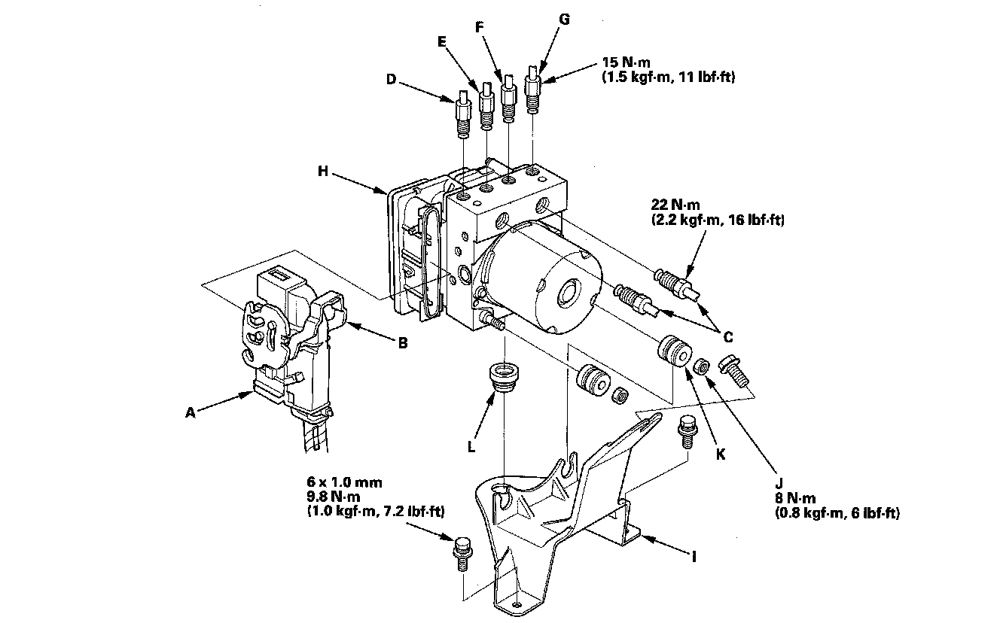

Electronic Brake Control Module: Service and Repair
VSA Modulator-Control Unit Removal and InstallationNOTE:
^ Do not spill brake fluid on the vehicle; it may damage the paint; if brake fluid gets on the paint, wash it off immediately with water.
^ Be careful not to damage or deform the brake lines during removal and installation.
^ To prevent the brake fluid from flowing, plug and cover the hose ends and joints with a shop towel or equivalent material.
Removal
1. Turn the ignition switch OFF.
2. Remove the air cleaner box.
3. Disconnect the VSA modulator-control unit 46P connector (A) by pulling up the lock (B); the connector disconnects itself.

4. Disconnect the six brake lines from the VSA modulator-control unit.
NOTE: Brake lines are connected to the master cylinder (C) and to the right-front (D), the left-rear (E), the right-rear (F), and the left-front (G) brake systems.
5. Remove the VSA modulator-control unit (H) with the bracket (I) from the body.
6. Remove the locknuts (J), then remove the VSA modulator-control unit from the bracket.
NOTE: During installation, install a new bushing (K) and new grommets (L). Otherwise, unwanted noise and vibration may be transmitted to the vehicle.
Installation
1. Install the new bushing and new grommets. (Otherwise, unwanted noise and vibration may be transmitted to the vehicle.)
2. Install the VSA modulator-control unit on the bracket, then install new locknuts.
3. Install the bracket with the VSA modulator-control unit.
4. Reconnect the six brake lines, then tighten the flare nuts with the specified torque.
5. Align the connecting surface of the VSA modulator-control unit 46P connector to the VSA modulator-control unit.
6. Lower the lock of the VSA modulator-control unit 46P connector, then confirm the connector is fully seated.
7. Reinstall the air cleaner box.
8. Bleed the brake system.
9. Do the steering angle center point write procedure.
10. Start the engine, and check that the ABS, the VSA indicators, and the trailer stability assist warning goes off.
11. Test-drive the vehicle, and check that the ABS, the VSA indicators, and the trailer stability assist warning do not come on.
NOTE: If the brake pedal is spongy, there may be air trapped in the modulator which could then be induced into the normal brake system during modulation. Bleed the brake system again.